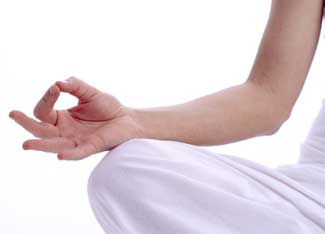

Meditation is not just for Zen masters. It’s for anyone who ever wishes to feel less frazzled, which, these days, is just about all of us. But meditation remained an Asian enigma ignored by Western scientists until the 1970s, when Harvard cardiologist Herbert Benson accidentally popularized it.
In 1968, Benson was using biofeedback gear to teach monkeys to lower their blood pressure. Devotées of transcendental meditation (TM), the practice that Maharishi Mahesh Yogi had taught the Beatles, learned of his research and told Benson that they could lower their blood pressure without biofeedback equipment, simply by meditating. Benson was skeptical, but tested the meditators and discovered that TM did, indeed, reduce blood pressure. It also lowered metabolic rate and oxygen consumption to levels unheard of except in hibernation or deep sleep.
Benson realized that the physiological changes caused by transcendental meditation were not unique to meditation. Other relaxation techniques also produced them, including yoga and hypnosis. The calm induced by meditation was a natural reaction, the physiological opposite of the fight-or-flight instinct that prepares the body for defense or escape. The fight-or-flight reflex increases blood pressure, heart rate, breathing and metabolism. The relaxing disciplines did the opposite. They reduced blood pressure and slowed heart rate, breathing and metabolism. Benson called this meditative reaction the “relaxation response.”
In 1975, Benson’s book The Relaxation Response became a bestseller. It broadened the Western concept of meditation beyond spiritual associations and presented a physiological case for deep relaxation that was palatable to Western sensibilities. Meanwhile, for the spiritually minded, it proved the value of age-old religious practices. Benson presented meditation as a physiological gift that anyone could use to calm down, cope with stress and, for those so inclined, feel at one with a higher power or the universe.
To elicit the relaxation response via meditation:
In another type of meditation, breath meditation, there is no mantra. Practitioners focus on their breath. The other steps remain the same.
Beyond deep relaxation, after a while, the relaxation response and all other types of meditation - including prayer - produce something extra, a feeling of wholeness that lingers long after you resume normal activities. Religious meditators describe this as “feeling the divine presence.” Mind-body researchers suggest that meditation’s residual effects are an “emotional vaccine” that “immunizes” practitioners against emotional distress.
Benson’s work spurred doctors to prescribe meditation as part of treatment for many conditions, among them:
Blood pressure. University of Kentucky researcher analyzed 107 studies of meditative approaches to blood pressure control. They showed that meditation reduces blood pressure significantly.
Stress/Anxiety relief: Harvard researchers taught meditation to half of a group of 58 doctors and nurses. Eight weeks later, the meditators reported significantly less stress and enhanced mental health. Meditation has also reduced stress for military veterans and students facing exams.
Depression. University of Louisville taught meditation to women who were depressed because they had fibromyalgia. Compared with a control group, the meditators reported significantly less depression.
Pain. British researchers subjected 42 university students to mild pain and recorded their reactions. Then the students were taught to meditate. When subjected to the same amount of pain, they reacted less. Another study scanned participants’ brains using functional magnetic resonance imaging. Longtime meditators showed 45 percent less activation of the areas of the brain that react to pain.
Hot Flashes. Menopausal women with severe hot flashes were taught to meditate at the University of Massachusetts. After 11 weeks, their hot flashes caused 40 percent less discomfort.
Diabetes. The latter study also showed that meditation improves the body’s ability to use insulin, thus reducing risk of diabetes.
Health care costs. Meditation improves so many measures of well-being, it stands to reason that it should also reduce health care costs. That’s what Blue Cross found in a study of members in Iowa: significantly lower health care costs for meditators.
There’s another kind of meditation, a practice Buddhists call vipassana, or insight meditation. Dr. Kabat-Zinn calls it “mindfulness,” the art of becoming deeply aware of the present instant. Mindfulness turns down the noise in our heads, the guilt, anger, doubts and “shoulds” that upset us moment to moment. Mindfulness encourages us to stop and smell the roses.
“The key to mindfulness,” Dr. Kabat-Zinn says, “is not what you focus on, but how you do it, the awareness you bring to each moment.” To teach mindfulness in his clinic, Kabat-Zinn hands each of his students a single raisin and asks them to eat it. Ordinarily, people would simply pop the raisin into their mouths, chew a few times and swallow, largely unconsciously. But mindful raisin eating is different. It begins with looking intently at the raisin, considering its shape, weight, color and texture. Next comes placing the raisin in the mouth, focusing on how it feels on the tongue as the mouth welcomes it with salivation. Then the mindful raisin eater chews the raisin slowly and thoroughly, focusing on its taste and texture. Finally, swallowing the raisin involves following it all the way down to the stomach.
Of course, it’s impossible to live life entirely mindfully. But those who commit to some mindful meditative moments every day generally feel less anxious. Try ending phone calls mindfully. Instead of just hanging up, enter a mindful moment as you say good-bye. Appreciate your connection to the person. Take several deep breaths. Then proceed with your life. Once you commit to a mindfulness trigger - ending phone calls or sipping tea, starting the car or petting your dog - it’s not difficult to work a dozen mindful moments into each day.
Swami Satchidananda, the Indian meditation teacher, once told Dr. Dean Ornish, whose natural program reverses heart disease: “Life is measured not in years, but in breaths. No one can calm the ocean’s waves, but using the breath [and the other meditative techniques], you can learn to surf.”
Mind-Body Medical Institute. Dr. Benson’s research institute at Harvard. www.mbmi.org
Full Catastrophe Living: Using the Wisdom of the Your Body and Mind to Face Stress, Pain, and Illness by Jon Kabat-Zinn, Ph.D. An exhaustive discussion of meditation. Available at Amazon.com.
Michael Castleman, of San Francisco, is “one of the nation’s top health writers” (Library Journal). Visit mcastleman.com.
|
 SUPERSTOCK Meditation can be used to lower blood pressure and alleviate pain, depression, even diabetes - and anyone can learn how to do it! |
|
|